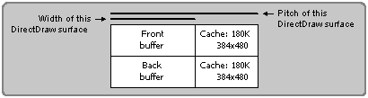

Введение
Как обычно, начну с оговорок.
Первое – для меня большая проблема перевести некоторые термины. Поэтому я думаю может и не стоит их переводить. :-) Вот список терминов, которые вызывают у меня трудности с переводом:
blitting - blit сокращение от "bit block transfer" пересылка блоков данных из одной области видеопамяти в другую.
flip – переключение между буферами видеопамяти
Surface – "поверхность" – область видеопамяти
Второе – разговор идет о использовании DirectDraw в Delphi. Для того, чтобы воспользоваться DirectX вообще и DirectDraw в частности, нужно, чтобы во-первых DirectX был установлен на компьютере (скачать его можно у Microsoft например, впрочем я не думаю, что для читателя будет проблемой его найти), во-вторых нужны файлы заголовков DirectX – их существует немало, я по-прежднему считаю компонент DelphiX от Hiroyuki Hori – превосходным , кроме того, существует официально поддерживаемые Borland'ом заголовки DirectX, составленные в рамках проекта "JEDI" – скачать их можно с (http://www.delphi-jedi.org/DelphiGraphics/).
Третье – неплохо если Вы имеете некоторое общее представление о работе видеоадаптера (ну очень общее – тонкости не нужны) и еще более общее о COM-технологии (всего-то нужно знать что такое COM- Interface, впрочем и это не обязательно).
DirectDraw – интерфейс DirectX, предназначенный, по существу, для управления видеопамятью.
Прелесть однако заключается в том, что с DirectDraw доступ к видеопамяти становится не зависимым от типа используемой видеоплаты (ну или почти не зависимым). DirectDraw обращается к апаратуре посредством hardware abstraction layer (HAL) – (уровня абстагирования от аппаратуры). Кроме того с помощью hardware emulation layer (HEL) (уровня эмуляции аппаратуры) те возможности, которые не реализованы в данной видеокарте эмулируются программно (к сожалению тут есть пара исключений). Благодаря такому подходу жизнь программиста становится легче и веселее – если, например, видеокарта поддерживает hardware blitting – DirectDraw использует эту возможность через HAL – если нет – эмулирует через HEL (естественно эмуляция всегда медленнее). На рисунке из SDK показаны отношения между DirectDraw, GDI, HAL и HEL.

Как видно из рисунка DirectDraw находится вне GUI. DirectDraw может предоставлять области памяти, с которыми он работает в виде контекста устройства (device context, привычный для Windows-программиста), что позволяет использовать функции GDI для работы с ним (например, выводить текст с помощью функции TextOut)
DirectDraw можно использовать как при рисовании в окне Windows так и при работе в полноэкранном режиме. Я пока буду говорить только о полноэкранном режиме (с эксклюзивным уровнем кооперации).
Видео режимы.
Режим определяет размер видимой области экрана в пикселах и число бит, требуемых для представления одного пиксела ("глубина цвета ") (практически все мониторы поддерживают например режим 640ґ480ґ8). Чем больше ширина и высота экрана в пикселах, и чем больше бит требуется для представления одного пиксела, тем больше видеопамяти требуется для режима.
Кроме того видеорежимы бывают палитровыми (palettized) и безпалитровыми (non-palettized). В палитровых режимах "глубина цвета" означает число элементов палитры для данного режима, например 8-битовый палитровый режим означает, что используется палитра, размером 256 элементов. В безпалитровом режиме "глубина цвета" означает число бит для представления цвета (8 бит – 256 цветов, 16 бит – 65535 цветов и т.д.)
Чтобы выяснить какие режимы поддерживает ваша видеокарта можно использовать интефейс IDirectDraw4::EnumDisplayModes.
Пример:
выясним все поддерживаемые видеорежимы {используем DirectX headers от JEDI}
function MyEnumFunction(const lpDDSurfaceDesc: TDDSurfaceDesc; lpContext:
Pointer): HResult; stdcall
var
SMode: string;
begin
SMode := IntToStr(lpDDSurfaceDesc.dwWidth) + ' X ';
SMode := SMode + IntToStr(lpDDSurfaceDesc.dwHeight) + ' X ';
SMode := SMode + IntToStr(lpDDSurfaceDesc.ddpfPixelFormat.dwRGBBitCount);
Form1.ListBox1.Items.Append(SMode);
end;
procedure TForm1.Button2Click(Sender: TObject);
var
DD: IDirectDraw;
hr: HRESULT;
begin
hr := DirectDrawCreate(nil, DD, nil);
if (hr = DD_OK) then
begin
ListBox1.Clear;
DD.EnumDisplayModes(0, nil, nil, MyEnumFunction);
end;
end;
{то же используя компонент DelphiX}
procedure TForm1.Button1Click(Sender: TObject);
var
i: integer;
SMode: string;
begin
ListBox1.Clear;
for i := 0 to DXDraw1.Display.Count - 1 do
begin
SMode := IntToStr(DXDraw1.Display.Modes[i].Width) + ' X ';
SMode := SMode + IntToStr(DXDraw1.Display.Modes[i].Height) + ' X ';
SMode := SMode + IntToStr(DXDraw1.Display.Modes[i].BitCount);
ListBox1.Items.Append(SMode);
end;
end;
Чувствуете почему я так люблю Hiroyuki Hori с его компонентом DelphiX? :-) Действительно проще – но, увы, документация у DelphiX очень скудная (и по большей части на японском). Вообще говоря, наверное полезно изучить "классический" способ работы с DirectDraw от JEDI – потом легче пользоваться и DelphiX.
Установить видеорежим можно методом IDirectDraw4::SetDisplayMode.
Установим видеорежим 640x480x8 {используем DirectX headers от JEDI}
procedure TForm1.Button1Click(Sender: TObject);
var
DD: IDirectDraw;
DD4: IDirectDraw4;
hr: HRESULT;
begin
hr := DirectDrawCreate(nil, DD, nil);
if (hr = DD_OK) then
begin
DD.QueryInterface(IID_IDirectDraw4, DD4);
DD4.SetCooperativeLevel(Self.Handle, DDSCL_EXCLUSIVE or DDSCL_FULLSCREEN);
DD4.SetDisplayMode(640, 480, 8, 0, 0);
//DD4.RestoreDisplayMode;
end;
end;
{то же используя компонент DelphiX}
procedure TForm1.Button1Click(Sender: TObject);
begin
DXDraw1.Display.Width := 640;
DXDraw1.Display.Height := 480;
DXDraw1.Display.BitCount := 8;
DXDraw1.Options := DXDraw1.Options + [doFullScreen];
DXDraw1.Initialize;
end;
Восстановить тот видеорежим, что был установлен до вызова SetDisplayMode можно функцией IDirectDraw4::RestoreDisplayMode. Впрочем, для программ использующих полноэкранный режим это не так уж важно – прежний режим будет восстановлен автоматически.
Кстати пример с JEDI-заголовками хорош тем, что демонстрирует создание объекта IDirectDraw получение ссылки на интерфейс IDirectDraw4 вызовом метода QueryInterface из IDirectDraw (IDirectDraw без номера – базовый (и самый старый) интерфейс DirectDraw; IDirectDraw4 – интерфейс из DirectX 6). Вообще объект IDirectDraw – это самая, что ни на есть, сердцевина DirectDraw – он представляет собой некую абстракцию над видеоадаптером – с помощью его методов создаются все остальные объекты DirectDraw (Surface'ы, палитры и т.д.). В принципе можно создавать больше одного объекта IDirectDraw – если у Вас больше одного видеоадаптера и несколько мониторов – в таком случае Вы ровно во столько раз круче меня, на сколько число Ваших видеоадаптеров больше 1-го :-) (для знатоков COM-технологии – для этого при создании объекта DirectDraw нужно передать GUID другого дисплея). Если же монитор у Вас один Вы можете создавать несколько объектов DirectDraw – все они будут управлять одним и тем же видеоадаптером – но мы этот случай рассматривать не будем.
В случае же если Вы используете Hori'вский компонент DelphiX – мучения с инициализацией и деинициализацией сводятся к нулю – достаточно просто разместить на форме компонент DXDraw – он сам позаботится о мелочах жизни, вроде create и release. :-)
Итак, переключаться между видеорежимами мы научились.
Поговорим теперь о Surface'ах. (моя попытка найти хороший русский эквивалент этому слову, не увенчалась успехом). Surface (объект DirectDrawSurface) – в буквальном переводе поверхность, представляет собой линейный участок в видеопамяти. (впрочем можно создавать Surface'ы и в системной памяти – но мы на этом не станем задерживаться) По умолчанию Surface создается так, чтобы получить максимальное быстродействие – в видеопамяти, если ее не хватает – в нелокальной видеопамяти (для плат AGP) а если и ее не хватает то в системной памяти (этот случай самый медленный). Объект DirectDrawSurface кроме указателя на область видеопамяти содержит несколько очень полезных методов (и зверски скоростных) для быстрого переноса квадратика видеоизображения из одного участка Surface'а в другой (blitting), для быстрой смены одного Surface' а на экране другим – fliping, для работы с палитрами и спрайтами и др.
Ну как удалось мне вас заинтересовать? Ну тогда давайте разберемся – как эти самые замечательные Surface'ы создавать. Перво-наперво скажем что у каждого Surface'а должен быть размер - ширина и высота. Кроме того Surface'ы устроены так, что между началом одной строчки и другой расстояние не всегда равное ширине. Скажем мы создали Surface 640X480X8 – казалось бы между первой строчкой и второй ровно 640 байт – ан нет. Может 640 байт а может и больше (это завист от того парня, который писал драйвер Вашего видеоадаптера). Расстояние между строчками в байтах называется Pitch – переводится как шаг. Почему этот самый Pitch не всегда равен ширине видно из рисунка:
Видите – справа от нашего Front-bufera может быть какой-то кэш, если Вы вздумаете писать напрямую в видеопамять – писать туда (в кэш) строго не рекомендуется (за последствия никто не ручается). Кроме того Pitch, в отличие от ширины измеряется в байтах а не в пикселах.
Раз уж заговорили, про Front-bufer'ы – скажем уж и про то, что один Surface, называемый PrimarySurface, является главным - это тот самый Surface, который был виден на экране в момент когда мы начали создавать эти самые Surface'ы.
Surface'ы могут быть обьединены в так называемые flip-цепочки. Когда происходит flip между Surface'ами – тот Surface, что сейчас на экране, заменяется следующим в цепочке, на следующем flip'е – этот – следующим и т.д. – если дошли до последнего в цепочке – то он заменяется на первый. Ну в обычной жизни цепочка может состоять из всего двух Surface' ов – при каждом они просто flip'е сменяют друг друга. Обратите внимание – при flip'е смена Surface'ов происходит не в результате пересылки всего их содержимого, а просто в результате изменения указателей на области видеопамяти в видеоадаптере – поэтому flip выполняется очень быстро. (Исключение может быть только в случае если Вы создали столько Surface'ов, что они не поместились в видеопамяти – тогда за дело возьмется HEL – бедняге придется все это эмулировать и скорость будет – не ахти). C помощью flip можно создавать анимацию, выводим какую-то картинку, затем в BackBuffer'e – чуть-чуть меняем эту картинку, вызываем flip, чуть-чуть меняем картинку в BackBuffer'e, вызываем flip и т.д. в цикле.
Вот пример создания Flip-цепочки из двух Surface'ов, обьектов IDirectDrawSurface4.
(Ссылки на два созданных Surface'а сохраняются в переменных FPrimarySurface и FbackSurface)
(этот пример взят из моей демо-программульки, которую Вы может скачать здесь 169K)
{используются JEDI – заголовки DirectX}
uses ... DDraw;
var
hr: HRESULT;
SurfaceDesc: TDDSurfaceDesc2;
DDSCaps: TDDSCAPS2;
DD: IDirectDraw;
begin
/// ...начнем, помолясь
hr := DirectDrawCreate(nil, DD, nil); ///создали DirectDraw
if (hr = DD_OK) then
begin
// Получим интерфейс IDirectDraw4
DD.QueryInterface(IID_IDirectDraw4, FDirectDraw);
// интерфейс DirecDraw1 нам больше не нужен
DD := nil;
// Установим эксклюзивный уровень кооперации и полноэкранный режим
hr := FDirectDraw.SetCooperativeLevel(Handle, DDSCL_EXCLUSIVE or
DDSCL_FULLSCREEN);
if (hr = DD_OK) then
begin
hr := FDirectDraw.SetDisplayMode(640, 480, 8, 0, 0);
///переключаем видеорежим на 640X480X8
if (hr = DD_OK) then
begin
// Создаем главный surface с одним back buffer'ом
FillChar(SurfaceDesc, SizeOf(SurfaceDesc), 0);
SurfaceDesc.dwSize := SizeOf(SurfaceDesc);
///говорим что нам нужны back buffer'ы
SurfaceDesc.dwFlags := DDSD_CAPS or DDSD_BACKBUFFERCOUNT;
////говорим что создаем первый Surface
SurfaceDesc.ddsCaps.dwCaps := DDSCAPS_PRIMARYSURFACE
or DDSCAPS_FLIP //// во Flip-цепочке
or DDSCAPS_COMPLEX; //// а вообще будут и дополнительные Surface'ы
//// число этих самых дополнительных - 1
SurfaceDesc.dwBackBufferCount := 1;
///все готово, создаем Surface'ы и запоминаем главный в FPrimarySurface
hr := FDirectDraw.CreateSurface(SurfaceDesc, FPrimarySurface, nil);
if (hr = DD_OK) then
begin
// А теперь получим указатель на back buffer (создали-то два Surface'a сразу)
ddscaps.dwCaps := DDSCAPS_BACKBUFFER;
///получили и запомнили в FBackSurface
hr := FPrimarySurface.GetAttachedSurface(ddscaps, FBackSurface);
if (hr = DD_OK) then
begin
{Все нормально - Surface'ы созданны - выходим}
exit;
end;
end;
end;
end;
end;
{где-то была ошибка - сообщаем об этом неприятном факте}
MessageBox(Self.Handle, PChar('Не удалось инициализировать DirectDraw! ' +
ErrorString(Hr)), 'ERROR', MB_OK);
Close();
end;
Создали Surface'ы. Теперь было бы интересно что-нибудь на них нарисовать. Интересно также попробовать писать прямо в видеопамять.
Получить указатель на область видеопамяти Surface'а можно вызвав метод Lock – он вернет указатель в структуре типа TDDSURFACEDESC2, которую получает в качестве параметра.
С фантазией у меня всегда было не очень – поэтому просто заполню всю область Surface'ов одним цветом, записав в видеопамять одно и тоже значение.
var
i, j: integer;
AdresVideo: PByteArray;
SurfaceDesc: TDDSURFACEDESC2;
HR: HResult;
begin
// Пишем прямо в видеопамять
FillChar(SurfaceDesc, SizeOf(SurfaceDesc), 0);
SurfaceDesc.dwSize := SizeOf(SurfaceDesc);
HR := FPrimarySurface.Lock(nil, SurfaceDesc, {DDLOCK_WAIT or}
DDLOCK_SURFACEMEMORYPTR, 0);
if (HR = DD_OK) then
begin
AdresVideo := SurfaceDesc.lpSurface;
for i := 0 to SurfaceDesc.dwHeight - 1 do
begin
for j := 0 to SurfaceDesc.dwWidth - 1 do
begin
AdresVideo[j + i * SurfaceDesc.lPitch] := $FF;
end;
end;
FPrimarySurface.Unlock(nil);
end;
end;
Обратите внимание - какой я аккуратный – перехожу между строчками, учитывая Pitch. Да кстати – я просто демонстрирую как обратится к каждому байту видеопамяти Surface'a на самом деле если нужно закрасить весь Surface одним цветом то заносить значения в каждый байт слишком медленно – для этого можно воспользоваться методом IDirectDrawSurface4.Blt, передав ему флаг DDBLT_COLORFILL. Кроме того можно выводить на Surface и привычными функциями GDI – TextOut'ом например:
var
DC: HDC;
begin
if (FPrimarySurface.GetDC(DC) = DD_OK) then
begin
{Выводим текст на 1-й surface, используя GDI-фуекцию TextOut}
SetBkColor(DC, RGB(255, 255, 255));
SetTextColor(DC, RGB(255, 0, 0));
TextOut(DC, 10, 20, ' Проба пера', Length(' Проба пера'));
FPrimarySurface.ReleaseDC(DC);
end;
end;
Небольшое лирическое отступление – между вызовами LOCK и UNLOCK, а также между GetDC и ReleaseDC выполнение всех других программ останавливается (в том числе и отладчика). Отсюда выводы – первое – не стоит делать что-то слишком долго между этими вызовами, второе, отладить программу пошагово между этими вызовами – невозможно (если только Вы не вооружились Kernel-debuger'ом).
Теперь попробуем flip'ануть наши Surface'ы. Переключимся на другой Surface
hr := FPrimarySurface.Flip(nil, 0);
Метод Flip может отказаться flip'овать и вернуть, среди прочих, такие коды ошибок:
DDERR_NOEXCLUSIVEMODE – этот код возврата означает, что наша программа потеряла эксклюзивный режим. Произойти такое может, если мы flip'уем в цикле по таймеру, а пользователь зачем-то ушел из нашей программы, свернув ее или нажав Alt-TAB. В таком случае, чтобы зря не тратить процессорные циклы, лучше подождать его возвращения, вызывая функцию Sleep(0) или WaitMessage.
DDERR_SURFACELOST – потеря Surface'ов пользователь уходил, но вернулся, Surface'ы нужно забрать назад, вызвав IDirectDraw4.RestoreAllSurfaces, содержимое их придется восстановить.
Все вышесказанное касается классического стиля использования DirectDraw в стиле С от JEDI. Поклонники же Hori'вского набора DelphiX могут поэкспериментировать c Surface'ами используя TDXDraw.DDraw.SurfaceCount, TDXDraw.DDraw.Surfaces, TDXDraw.Flip – вместе с набором компонент распространяются отличные примеры.
Я очень рад, что Вы дочитали до этого места (если Вы просто пролистали в конец, не читая, сделайте вид, что это не так, порадуйте меня, старика) :-).
На этом пока все. Если Вы заинтересовались – скачайте демо-программку и поэкспериментируйте.
Пишите мне – aziz@telebot.com или error@softhome.net – с удовольствием приму Ваши пожелания и предложения (особенно если предложите какую-нибудь работу) :-).
Взято с http://delphiworld.narod.ru